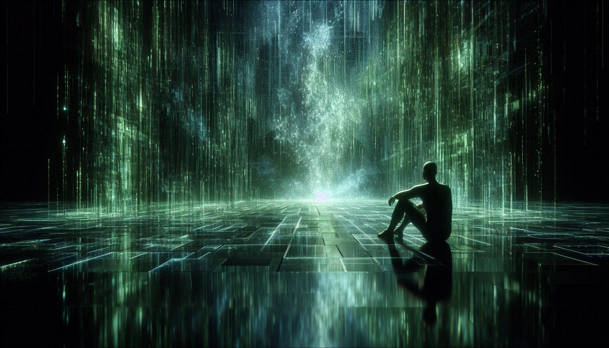
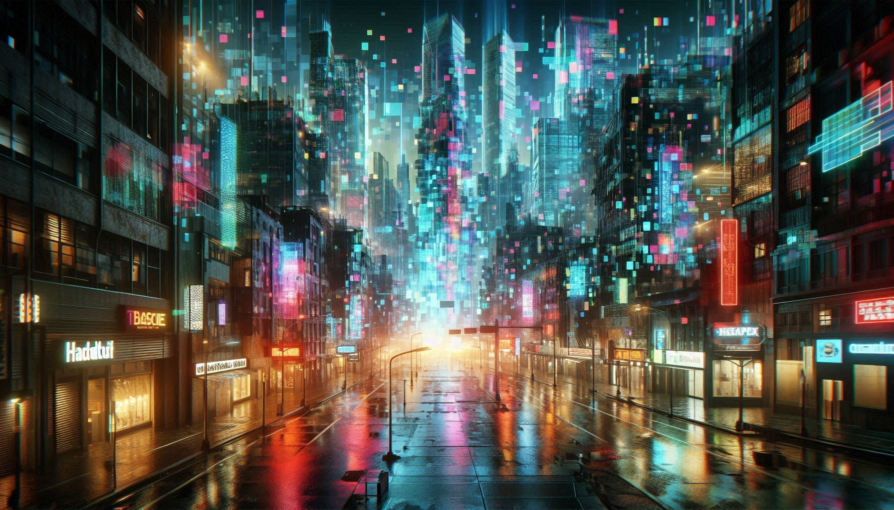

ERROR 404: REALITY NOT FOUND

Simulation Theory parayunnath nammude ee lokam, nakshatrangal, nammude feelings ellam oru Advanced Civilization create cheytha oru program mathramaanu ennanu. Ithu verum cinema katha alla—Elon Musk and Neil deGrasse Tyson pole ulla thinkers ithu sathyamaakan valiya chance undennu parayunnu.
Just 40-50 years munne namukk 'Pong' (randu lines and a dot) pole ulla simple games mathrame undayirunnuള്ളൂ. Pakshe innu namukk Photo-realistic VR games undu.

Science-il chila karyangal strange aayi thonnum:
• Mathematical Constants: Nammude universe-ile speed of light, gravity, and atom structure ellam oru specific number aayi "set" cheythirikkukayaanu. Code-ile variables pole!
• The Pixel Limit: Physics-il Planck Length ennoru limit undu. Athinu thazhe oru distance illa.
Digital photos-ile 'Pixels' pole aanu universe-inte smallest unit.
• Mandela Effect: Pala aalukalkkum ore pole thonnum oru kaaryam pandu vere reethiyil aayirunnu ennu (Ex: Pikachu-vinu vaalil black tip undayirunnu ennu chilar karuthunnu, pakshe real aayi illa). Ithu oru system update-inte side effect aayirikkamo?
Quantum Physics-il "Observer Effect" ennoru karyamundu. Nammal oru particke-ine observe cheyyunnathinu munne athu oru wave mathramaanu. Nammal nokkumpol mathrame athu oru physical object aayi maaru. Games-il 'Rendering' poleyaanu ithu—namule character evide nokkunnunno aa part mathram computer render cheyyunnu!
If this is a simulation:
Ithu ippozhum oru Theory mathramaanu. Proof kittanamenkil system-il oru valiya "Glitch" nammukk kandupidikkendi varum. Pakshe nammude technology-ude valarcha nokkiyal, nammalum oru divasam vere oru lokathe simulate cheyyunnundaakum!